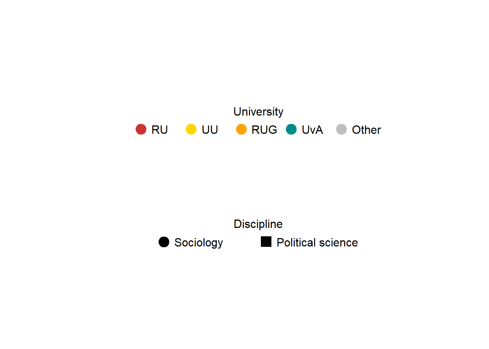

Last compiled on oktober, 2025
rm(list = ls())
fpackage.check = function(packages) {
lapply(packages, FUN = function(x) {
if (!require(x, character.only = TRUE)) {
install.packages(x, dependencies = TRUE)
library(x, character.only = TRUE)
}
})
}
fsave = function(x, file = NULL, location = "./data/processed/") {
ifelse(!dir.exists("data"), dir.create("data"), FALSE)
ifelse(!dir.exists("data/processed"), dir.create("data/processed"), FALSE)
if (is.null(file))
file = deparse(substitute(x))
datename = substr(gsub("[:-]", "", Sys.time()), 1, 8)
totalname = paste(location, datename, file, ".rda", sep = "")
save(x, file = totalname) #need to fix if file is reloaded as input name, not as x.
}
fload = function(filename) {
load(filename)
get(ls()[ls() != "filename"])
}
fshowdf = function(x, ...) {
knitr::kable(x, digits = 2, "html", ...) |>
kableExtra::kable_styling(bootstrap_options = c("striped", "hover")) |>
kableExtra::scroll_box(width = "100%", height = "300px")
}
fcolnet = function(data = scholars, university = c("RU", "VU","UU", "UvT", "RUG", "EUR", "UvA"), discipline = "Sociologie", waves = list(c(2015,
2018), c(2019, 2023), c(2024, 2025)), type = c("first")) {
university = paste0('(', paste0(university, collapse='|' ), ')')
discipline = paste0('(', paste0(discipline, collapse='|' ), ')')
# step 1
demographics = data$demographics
sample = which(
(str_detect(demographics$universiteit.22, university)
| str_detect(demographics$universiteit.24, university)
| str_detect(demographics$universiteit.25, university)
) & (
str_detect(demographics$discipline.22, discipline)
| str_detect(demographics$discipline.24, discipline)
| str_detect(demographics$discipline.25, discipline)
) |> replace_na(FALSE))
demographics_soc = demographics[sample, ] |> drop_na(id)
# step 2
ids = demographics_soc$id |> unique()
scholars_sel = list()
for (id_ in ids){
scholars_sel[[id_]] = bind_rows(scholars$works) |>
filter(author_id == id_)
}
scholars_sel = bind_rows(scholars$works)
nwaves = length(waves)
nets = array(0, dim = c(nwaves, length(ids), length(ids)), dimnames = list(wave = 1:nwaves, ids,
ids))
dimnames(nets)
# step 3
df_works = tibble(
works_id = scholars_sel$id,
works_author = scholars_sel$authorships,
works_year = scholars_sel$publication_year
)
df_works = df_works[!duplicated(df_works), ]
# step 4
if (type == "first") {
for (j in 1:length(waves)) {
df_works_w = df_works[df_works$works_year >= waves[[j]][1] & df_works$works_year <= waves[[j]][2],
]
for (i in 1:nrow(df_works_w)) {
ego = df_works_w$works_author[i][[1]]$id[1]
alters = df_works_w$works_author[i][[1]]$id[-1]
if (sum(ids %in% ego) > 0 & sum(ids %in% alters) > 0) {
nets[j, which(ids %in% ego), which(ids %in% alters)] = 1
}
}
}
}
if (type == "last") {
for (j in 1:length(waves)) {
df_works_w = df_works[df_works$works_year >= waves[[j]][1] & df_works$works_year <= waves[[j]][2],
]
for (i in 1:nrow(df_works_w)) {
ego = rev(df_works_w$works_author[i][[1]]$id[1])
alters = rev(df_works_w$works_author[i][[1]]$id[-1])
if (sum(ids %in% ego) > 0 & sum(ids %in% alters) > 0) {
nets[j, which(ids %in% ego), which(ids %in% alters)] = 1
}
}
}
}
if (type == "all") {
for (j in 1:length(waves)) {
df_works_w = df_works[df_works$works_year >= waves[[j]][1] & df_works$works_year <= waves[[j]][2],
]
for (i in 1:nrow(df_works_w)) {
egos = df_works_w$works_author[i][[1]]$id
if (sum(ids %in% egos) > 0) {
nets[j, which(ids %in% egos), which(ids %in% egos)] = 1
}
}
diag(nets[j,,]) = 0
}
}
output = list()
output$data = demographics_soc
output$nets = nets
return(output)
}
packages = c(
"RSiena", "tidyverse",
"dplyr", "stringr", "scholar", "openalexR", "rvest", "jsonlite" # these packages were added to make the code run
)
library(igraph)
fpackage.check(packages)
scholars = fload("C:/Users/hanne/Downloads/20251017scholars.Rda")# Build the network
test <- fcolnet(data = scholars,
university = c("RU", 'UvA', "RUG", "UU"),
discipline = c("Sociologie", "Politicologie"),
waves = list(c(2015, 2018), c(2019, 2023), c(2024, 2025)),
type = c("all"))
# --- Prepare ego-level data for later use ---
df_ego <- test$data
# First wave
test_w1 <- igraph::graph_from_adjacency_matrix(
test$nets[1,,],
mode = "undirected",
weighted = NULL,
diag = FALSE,
add.colnames = NULL
)
# Second wave
test_w2 <- igraph::graph_from_adjacency_matrix(
test$nets[2,,],
mode = "undirected",
weighted = NULL,
diag = FALSE,
add.colnames = NULL
)
# thrird wave
test_w3 <- igraph::graph_from_adjacency_matrix(
test$nets[3,,],
mode = "undirected",
weighted = NULL,
diag = FALSE,
add.colnames = NULL
)
# Make it an array
nets_correct <- aperm(test$nets, c(2, 3, 1))
dim(nets_correct)
net_siena <- sienaDependent(nets_correct)# ---------- Bereken cross-department variabele voor alle waves ----------
# Vereist: nets_correct (array van dim [actors x actors x waves])
# df_ego met kolom discipline.22
# 1. Disciplinevector voorbereiden
dept_num <- as.numeric(as.factor(df_ego$discipline.22))
dept_num[is.na(dept_num)] <- 99 # vervang missende waarden door neutrale code
# 2. Functie om cross-score per wave te berekenen
get_cross_score <- function(wave_matrix, dept_num) {
# Verschilmatrix: TRUE als alter andere discipline heeft
diff_dept_matrix <- outer(dept_num, dept_num, FUN = function(i, j) i != j)
# Aantal cross-department ties per ego
cross_out_counts <- rowSums(wave_matrix * diff_dept_matrix, na.rm = TRUE)
# Totale outdegree per ego
ego_outdeg <- rowSums(wave_matrix, na.rm = TRUE)
# Proportie cross-department relaties
cross_prop <- ifelse(ego_outdeg > 0, cross_out_counts / ego_outdeg, 0)
# Indirecte blootstelling (alter heeft cross_prop > 0)
indirect_flag <- rep(0, length(cross_prop))
for (i in seq_along(cross_prop)) {
alters <- which(wave_matrix[i, ] != 0)
if (length(alters) > 0) {
if (cross_prop[i] == 0 && any(cross_prop[alters] > 0)) {
indirect_flag[i] <- 1
}
}
}
# Categoriseer score
cross_score <- dplyr::case_when(
cross_prop == 0 & indirect_flag == 0 ~ 0,
cross_prop == 0 & indirect_flag == 1 ~ 1,
cross_prop > 0 & cross_prop <= 0.25 ~ 2,
cross_prop > 0.25 & cross_prop <= 0.5 ~ 3,
cross_prop > 0.5 ~ 4
)
return(cross_score)
}
# 3. Toepassen op alle waves
nwaves <- dim(nets_correct)[3]
cross_scores <- sapply(1:nwaves, function(w) {
get_cross_score(nets_correct[,,w], dept_num)
})
# 4. RSiena varCovar-object aanmaken
cross_cov <- varCovar(cross_scores)
#Department covar
demographics_soc <- test$data
# Replace empty / missing with NA
demographics_soc$discipline.22[demographics_soc$discipline.22 == "missing"] <- NA
# Keep only the two real departments
dept_factor <- factor(demographics_soc$discipline.22,
levels = c("Politicologie", "Sociologie"))
# Convert to numeric for RSiena
dept_num <- as.numeric(dept_factor)
# Create a covariate object (RSiena ignores NAs automatically)
dept_cov <- coCovar(dept_num)The collaboration networks analyzed in this study consist of 474 scholars across three waves (2015–2018, 2019–2023, 2024–2025). The tables below present key network statistics, including the number of nodes, edges, dyads, triad census, transitivity, and the proportion of interdisciplinary ties. In wave 1, there were 474 nodes and 226 edges, indicating relatively sparse connectivity. The number of edges increased in wave 2 to 381, suggesting more active collaboration, before declining to 265 in wave 3. This decline is consistent with the shorter time period of wave 3, which likely limits the number of co-authored papers captured in the network. All dyads are either null (no tie) or mutual (tie present), reflecting the undirected nature of co-authorship networks where all ties are treated as reciprocal. Triad census measures reveal the prevalence of various three-node configurations. Most triads are disconnected (T003), reflecting network sparsity, while a small number of partially connected and fully connected triads appear across all waves (T102, T201, T300). The transitivity coefficient, which indicates the likelihood that two collaborators of a scholar are themselves connected, is moderate but stable over time. This suggests that while collaborations are not highly clustered, there is a modest tendency for local closure, consistent with triadic processes in academic networks. The proportion of interdisciplinary ties, collaborations between scholars from different departments, is relatively low but consistent across waves. In raw counts, wave 1 has 13 interdisciplinary ties (6% of total edges), wave 2 has 18 ties (5%), and wave 3 has 10 ties (7%). These results show now clear support for the increase of interdisciplinary ties over time. Overall, these descriptive statistics provide a foundation for examining both actor-level mechanisms (disciplinary affiliation, interdisciplinarity) and structural mechanisms (triadic closure, transitivity) in the evolution of scholarly collaboration networks.
# Suppose you have a list of graphs for each wave
graphs <- list(test_w1, test_w2, test_w3)
# Create a data frame with nodes and edges for each wave
network_nodes_edges <- data.frame(
wave = seq_along(graphs),
nodes = sapply(graphs, vcount), # count vertices
edges = sapply(graphs, ecount) # count edges
)
# View the table
fshowdf(network_nodes_edges)| wave | nodes | edges |
|---|---|---|
| 1 | 474 | 226 |
| 2 | 474 | 381 |
| 3 | 474 | 265 |
# List of graphs (waves)
graphs <- list(test_w1, test_w2, test_w3)
# Function to compute dyad census for a graph
dyad_summary <- function(g) {
dyads <- dyad_census(g) # returns null, asymmetric, mutual
data.frame(
wave = NA,
null_dyads = dyads$null,
asymmetric_dyads = dyads$asym,
mutual_dyads = dyads$mut
)
}
# Apply to all waves
dyad_census_table <- bind_rows(lapply(seq_along(graphs), function(i) {
df <- dyad_summary(graphs[[i]])
df$wave <- i
df
}))
# Reorder columns for readability
dyad_census_table <- dyad_census_table %>% select(wave, everything())
# Show the table
fshowdf(dyad_census_table)| wave | null_dyads | asymmetric_dyads | mutual_dyads |
|---|---|---|---|
| 1 | 111875 | 0 | 226 |
| 2 | 111720 | 0 | 381 |
| 3 | 111836 | 0 | 265 |
# List of graphs (waves)
graphs <- list(test_w1, test_w2, test_w3)
# Function to compute triad census for a graph
triad_summary <- function(g) {
triads <- triad_census(g) # returns 16 triad counts
data.frame(
wave = NA,
T003 = triads[1],
T012 = triads[2],
T102 = triads[3],
T021D = triads[4],
T021U = triads[5],
T021C = triads[6],
T111D = triads[7],
T111U = triads[8],
T030T = triads[9],
T030C = triads[10],
T201 = triads[11],
T120D = triads[12],
T120U = triads[13],
T120C = triads[14],
T210 = triads[15],
T300 = triads[16]
)
}
# Apply to all waves
triad_census_table <- bind_rows(lapply(seq_along(graphs), function(i) {
df <- triad_summary(graphs[[i]])
df$wave <- i
df
}))
# Reorder columns for readability
triad_census_table <- triad_census_table %>% select(wave, everything())
# Show the table
show(triad_census_table)#> wave T003 T012 T102 T021D T021U T021C T111D T111U T030T T030C T201 T120D T120U T120C T210
#> 1 1 17531449 0 104964 0 0 0 0 0 0 0 725 0 0 0 0
#> 2 2 17459133 0 176515 0 0 0 0 0 0 0 1411 0 0 0 0
#> 3 3 17512977 0 123508 0 0 0 0 0 0 0 645 0 0 0 0
#> T300
#> 1 86
#> 2 165
#> 3 94network_trans <- data.frame(
trans_w1 = transitivity(test_w1),
trans_w2 = transitivity(test_w2),
trans_w3 = transitivity(test_w3)
)
fshowdf(network_trans)| trans_w1 | trans_w2 | trans_w3 |
|---|---|---|
| 0.26 | 0.26 | 0.3 |
# --- Function to count interdisciplinary ties for undirected networks ---
count_interdiscip <- function(adj_matrix, discipline_vec) {
# Only consider upper triangle to avoid double counting
edges <- which(upper.tri(adj_matrix) & adj_matrix != 0, arr.ind = TRUE)
# Count interdisciplinary ties
interdiscip_count <- sum(
(discipline_vec[edges[,1]] == "Sociologie" & discipline_vec[edges[,2]] == "Politicologie") |
(discipline_vec[edges[,1]] == "Politicologie" & discipline_vec[edges[,2]] == "Sociologie")
)
# Total number of edges in upper triangle
total_edges <- nrow(edges)
# Proportion of interdisciplinary ties
proportion <- ifelse(total_edges > 0, interdiscip_count / total_edges, NA)
return(c(interdiscip_count = interdiscip_count, proportion = proportion))
}
# --- Wave 1 ---
valid_nodes_w1 <- which(!is.na(df_ego$discipline.22))
adj_w1_clean <- test$nets[1, valid_nodes_w1, valid_nodes_w1]
discipline_w1_clean <- df_ego$discipline.22[valid_nodes_w1]
interdiscip_w1 <- count_interdiscip(adj_w1_clean, discipline_w1_clean)
# --- Wave 2 ---
valid_nodes_w2 <- which(!is.na(df_ego$discipline.24))
adj_w2_clean <- test$nets[2, valid_nodes_w2, valid_nodes_w2]
discipline_w2_clean <- df_ego$discipline.24[valid_nodes_w2]
interdiscip_w2 <- count_interdiscip(adj_w2_clean, discipline_w2_clean)
# --- Wave 3 ---
valid_nodes_w3 <- which(!is.na(df_ego$discipline.25))
adj_w3_clean <- test$nets[3, valid_nodes_w3, valid_nodes_w3]
discipline_w3_clean <- df_ego$discipline.25[valid_nodes_w3]
interdiscip_w3 <- count_interdiscip(adj_w3_clean, discipline_w3_clean)
# --- Create summary table ---
interdiscip_table <- data.frame(
wave = c(1, 2, 3),
interdisciplinary_ties = c(interdiscip_w1["interdiscip_count"], interdiscip_w2["interdiscip_count"], interdiscip_w3["interdiscip_count"]),
proportion = c(interdiscip_w1["proportion"], interdiscip_w2["proportion"], interdiscip_w3["proportion"])
)
# --- Show results ---
fshowdf(interdiscip_table)| wave | interdisciplinary_ties | proportion |
|---|---|---|
| 1 | 13 | 0.06 |
| 2 | 18 | 0.05 |
| 3 | 10 | 0.07 |
Figures 1–3 display the co-authorship networks across three periods (2015–2019, 2019–2023, and 2024–2025). Isolates—authors without any collaborations in the respective period—were removed, which makes the networks appear visually denser than they are in reality. Still, some clear trends emerge. Collaboration remains strongly discipline-bound: sociologists (circles) and political scientists (squares) mostly cluster within their own disciplinary groups, with only limited cross-disciplinary connections. There is little visual indication of a sustained increase in interdisciplinary collaboration over time, the disciplinary clusters remain largely distinct, with only a few bridging ties appearing and disappearing across waves.
However, the networks do show structural evolution. From Wave 1 to Wave 2, the visualizations reveal denser local groupings and more tightly connected subnetworks, suggesting higher clustering and transitivity. By Wave 3, the network expands but remains organized around similar clustered cores, implying that existing collaborative structures persist rather than diversify. The visualization algorithm somewhat “suppresses” the real magnitude of these differences because isolates are excluded—meaning that in the full networks, the contrast between waves would likely be even stronger.
Figure 4 visualizes the same collaboration networks colored by interdisciplinarity scores (0–4), allowing for a more direct assessment of the relationship between interdisciplinarity and collaboration activity. Interestingly, the most interdisciplinary scholars (scores 3–4, in darker orange and red) are not necessarily those with the largest number of connections or the most central positions in the network. Instead, researchers with moderate interdisciplinarity (scores 1–2) appear more frequently at the core of collaborative clusters, suggesting that these scholars are more active or popular as collaborators.
library(igraph) # igraph functions will override
# --- Wave 1 ---
isolates_w1 <- which(igraph::degree(test_w1) == 0)
no_isolatesw1 <- igraph::delete_vertices(test_w1, isolates_w1)
# Vertex shapes
vertex_shapes1 <- ifelse(df_ego$discipline.22 == "Sociologie", "circle", "square")
vertex_shapes1[is.na(vertex_shapes1)] <- "rectangle"
vertex_shapes1 <- vertex_shapes1[-isolates_w1]
# Vertex colors
vertex_color1 <- ifelse(df_ego$universiteit.22 == "RU", "brown3",
ifelse(df_ego$universiteit.22 == "UU", "gold",
ifelse(df_ego$universiteit.22 == "RUG", "orange",
ifelse(df_ego$universiteit.22 == "UvA", "darkcyan", "grey"))))
vertex_color1 <- vertex_color1[-isolates_w1]
# --- Wave 2 ---
isolates_w2 <- which(igraph::degree(test_w2) == 0)
no_isolatesw2 <- igraph::delete_vertices(test_w2, isolates_w2)
# Vertex shapes
vertex_shapes2 <- ifelse(df_ego$discipline.24 == "Sociologie", "circle", "square")
vertex_shapes2[is.na(vertex_shapes2)] <- "rectangle"
vertex_shapes2 <- vertex_shapes2[-isolates_w2]
# Vertex colors
vertex_color2 <- ifelse(df_ego$universiteit.24 == "RU", "brown3",
ifelse(df_ego$universiteit.24 == "UU", "gold",
ifelse(df_ego$universiteit.24 == "RUG", "orange",
ifelse(df_ego$universiteit.24 == "UvA", "darkcyan", "grey"))))
vertex_color2 <- vertex_color2[-isolates_w2]
# --- Wave 3 ---
isolates_w3 <- which(igraph::degree(test_w3) == 0)
no_isolatesw3 <- igraph::delete_vertices(test_w3, isolates_w3)
# Vertex shapes
vertex_shapes3 <- ifelse(df_ego$discipline.25 == "Sociologie", "circle", "square")
vertex_shapes3[is.na(vertex_shapes3)] <- "rectangle"
vertex_shapes3 <- vertex_shapes3[-isolates_w3]
# Vertex colors
vertex_color3 <- ifelse(df_ego$universiteit.25 == "RU", "brown3",
ifelse(df_ego$universiteit.25 == "UU", "gold",
ifelse(df_ego$universiteit.25 == "RUG", "orange",
ifelse(df_ego$universiteit.25 == "UvA", "darkcyan", "grey"))))
vertex_color3 <- vertex_color3[-isolates_w3]
# Zelfde layout voor beide netwerken
set.seed(123)
layout_fr <- igraph::layout_with_fr(test_w1)# -----------------------------
# 1. Nieuwe lege plotruimte
# -----------------------------
plot.new()
# -----------------------------
# 2. Legenda universiteit (kleuren)
# -----------------------------
legend("top",
legend = c("RU", "UU", "RUG", "UvA", "Other"),
col = c("brown3", "gold", "orange", "darkcyan", "grey"),
pch = 19,
pt.cex = 2,
horiz = TRUE,
bty = "n",
title = "University",
inset = c(0, 0.2)
)
# -----------------------------
# 3. Legenda discipline (vormen)
# -----------------------------
legend("bottom",
legend = c("Sociology", "Political science"),
pch = c(19, 15), # 19 = circle, 15 = square
col = "black",
pt.cex = 2,
horiz = TRUE,
bty = "n",
title = "Discipline",
inset = c(0, 0.1)
)
# Plot Wave 1
set.seed(123) # for reproducible layout
layout1 <- layout_with_fr(no_isolatesw1) # Fruchterman-Reingold layout
plot(no_isolatesw1,
layout = layout1,
vertex.color = vertex_color1,
vertex.shape = vertex_shapes1,
vertex.size = 6,
vertex.frame.color = "gray",
vertex.label = NA,
edge.curved = 0.2,
edge.arrow.size = 0.1,
main = "Wave 1: 2015–2019"
)# Plot Wave 2
set.seed(123)
layout2 <- layout_with_fr(no_isolatesw2)
plot(no_isolatesw2,
layout = layout2,
vertex.color = vertex_color2,
vertex.shape = vertex_shapes2,
vertex.size = 6,
vertex.frame.color = "gray",
vertex.label = NA,
edge.curved = 0.2,
edge.arrow.size = 0.1,
main = "Wave 2: 2019–2023"
)# Plot Wave 3
set.seed(123)
layout3 <- layout_with_fr(no_isolatesw3)
plot(no_isolatesw3,
layout = layout3,
vertex.color = vertex_color3,
vertex.shape = vertex_shapes3,
vertex.size = 6,
vertex.frame.color = "gray",
vertex.label = NA,
edge.curved = 0.2,
edge.arrow.size = 0.1,
main = "Wave 3: 2024–2025"
)# ============================================================
# 1. Load packages
# ============================================================
library(igraph)
library(scales)
library(gridExtra)
library(grid)
# ============================================================
# 2. Color and size settings
# ============================================================
set.seed(123)
color_palette <- colorRampPalette(c("lightblue", "orange", "red"))(5)
# Vertex size function (based on degree)
get_vertex_size <- function(g) {
scales::rescale(igraph::degree(g, mode = "all"), to = c(5, 20))
}
# ============================================================
# 3. Plot function for a single wave
# ============================================================
plot_wave <- function(graph_obj, wave_idx, cross_scores, wave_label) {
# Remove isolates
no_iso <- igraph::delete.vertices(graph_obj, which(igraph::degree(graph_obj) == 0))
# Generate layout
layout_use <- igraph::layout_with_fr(no_iso)
# Map interdisciplinarity (cross_scores) to color
vertex_colors <- color_palette[cross_scores[, wave_idx] + 1]
# Compute vertex sizes based on degree
vertex_sizes <- get_vertex_size(no_iso)
# Plot the network
plot(no_iso,
layout = layout_use,
vertex.color = vertex_colors[igraph::V(no_iso)],
vertex.size = vertex_sizes[igraph::V(no_iso)],
vertex.shape = "circle",
vertex.frame.color = "gray70",
vertex.label = NA,
edge.curved = 0.2,
edge.width = 0.5,
main = wave_label
)
}
# ============================================================
# 5. Add combined legends (interdisciplinarity + degree)
# ============================================================
# New plot space for legend
plot.new()
# (a) Legend: interdisciplinarity
legend("bottom",
legend = paste("Score", 0:4),
col = color_palette,
pch = 19,
pt.cex = 2,
horiz = TRUE,
bty = "n",
title = "Interdisciplinarity",
inset = c(0, 0.35)
)
# (b) Legend: degree
legend_sizes <- c(5, 10, 20)
legend_labels <- c("Low degree", "Medium", "High")
legend("bottom",
legend = legend_labels,
pt.cex = legend_sizes / 6,
pch = 21,
col = "gray30",
pt.bg = "white",
horiz = TRUE,
bty = "n",
title = "Collaborations",
inset = c(0, 0)
)plot_wave(test_w1, 1, cross_scores, "Wave 1: 2015–2018")plot_wave(test_w2, 2, cross_scores, "Wave 2: 2019–2023")plot_wave(test_w3, 3, cross_scores, "Wave 3: 2024–2025")The baseline structural model (Model 1) was estimated using RSiena with an undirected network specification. All models assume unilateral initiative with reciprocal confirmation: one actor proposes a new tie or dissolves an existing one, and a new tie is only created if the partner confirms (Ripley & Preciado, 2011). The confirmation process is controlled by a fixed offset, which adjusts for the difference between binary and multinomial choice probabilities.
The model includes three structural effects: overall network density, transitive triads, and a combined degree-related activity and popularity term (degPlus). The density effect ( –2.37, SE = 0.04 ) was strongly negative, suggesting that scholars generally evaluate tie formation as undesirable in the absence of specific incentives. In other words, researchers do not collaborate randomly but rather selectively, they ‘dislike’ initiating new collaborations unless other factors, such as existing connections or disciplinary similarity, make such ties more attractive.. The transitive triads effect ( 0.80, SE = 0.05 ) was positive and significant, consistent with increasing closure: scholars are more likely to collaborate with colleagues of their collaborators. The degree activity + popularity effect ( 0.03, SE = 0.004 ) was also positive, implying a mild tendency for already well-connected scholars to attract additional ties. Overall, the baseline model indicates a highly clustered and preferentially attached network structure.
#> effectNumber effectName shortName include fix test initialValue parm
#> 1 6 degree (density) density TRUE FALSE FALSE -1.64519 0#> effectNumber effectName shortName include fix test initialValue parm
#> 1 9 transitive triads transTriads TRUE FALSE FALSE 0 0#> effectNumber effectName shortName include fix test initialValue parm
#> 1 42 degree act+pop degPlus TRUE FALSE FALSE 0 1#> If you use this algorithm object, siena07 will create/use an output file baseline_model.txt .#> Estimates, standard errors and convergence t-ratios
#>
#> Estimate Standard Convergence
#> Error t-ratio
#>
#> Rate parameters:
#> 0.1 Rate parameter period 1 21.4385 ( 5.8722 )
#> 0.2 Rate parameter period 2 6.5056 ( 0.5214 )
#>
#> Other parameters:
#> 1. eval degree (density) -2.3623 ( 0.0377 ) 0.0842
#> 2. eval transitive triads 0.7993 ( 0.0511 ) 0.0875
#> 3. eval degree act+pop 0.0300 ( 0.0042 ) 0.0660
#>
#> Overall maximum convergence ratio: 0.1281
#>
#>
#> Model Type:
#> net_siena : Initiative model
#>
#>
#> Total of 1894 iteration steps.
#>
#> Covariance matrix of estimates (correlations below diagonal)
#>
#> 0.001 0.001 0.000
#> 0.306 0.003 0.000
#> -0.854 -0.533 0.000
#>
#> Derivative matrix of expected statistics X by parameters:
#>
#> 1752.950 325.405 43587.631
#> 740.246 1362.671 38572.754
#> 18998.259 10521.363 707528.494
#>
#> Covariance matrix of X (correlations below diagonal):
#>
#> 1469.530 1338.402 55521.681
#> 0.611 3265.477 81159.636
#> 0.865 0.849 2800929.963Model 2 extends the baseline structural model by including a covariate capturing departmental similarity, allowing for the examination of disciplinary homophily while retaining the core structural mechanisms identified in Model 1. The model again converged well (overall maximum convergence ratio = 0.0288), and all estimated effects were statistically significant and in the expected directions.
The results show the departmental similarity effect (β = 1.32, SE = 0.11), which is positive and significant. This finding provides strong evidence of disciplinary homophily, scholars are substantially more likely to collaborate with colleagues from their own department (e.g., sociology with sociology, political science with political science) than to engage in interdisciplinary collaborations.
Model 2 demonstrates that the network’s structure remains shaped by clustering and centralization, while disciplinary affiliation continues to exert a strong organizing force on collaboration patterns. Together, these results suggest that even within an evolving academic environment, disciplinary boundaries persist as a key determinant of collaborative behavior.
#> effectNumber effectName shortName include fix test initialValue parm
#> 1 7 degree (density) density TRUE FALSE FALSE -1.64519 0#> effectNumber effectName shortName include fix test initialValue parm
#> 1 10 transitive triads transTriads TRUE FALSE FALSE 0 0#> effectNumber effectName shortName include fix test initialValue parm
#> 1 43 degree act+pop degPlus TRUE FALSE FALSE 0 1#> effectNumber effectName shortName include fix test initialValue parm
#> 1 154 dept_cov similarity simX TRUE FALSE FALSE 0 0#> If you use this algorithm object, siena07 will create/use an output file model2_dept_homophily.txt .#> Estimates, standard errors and convergence t-ratios
#>
#> Estimate Standard Convergence
#> Error t-ratio
#>
#> Rate parameters:
#> 0.1 Rate parameter period 1 18.8009 ( 4.2423 )
#> 0.2 Rate parameter period 2 6.3736 ( 0.5119 )
#>
#> Other parameters:
#> 1. eval degree (density) -2.6813 ( 0.0544 ) -0.0705
#> 2. eval transitive triads 0.7135 ( 0.0478 ) -0.0101
#> 3. eval degree act+pop 0.0264 ( 0.0044 ) -0.0756
#> 4. eval dept_cov similarity 1.3399 ( 0.1156 ) 0.0161
#>
#> Overall maximum convergence ratio: 0.2857
#>
#>
#> Model Type:
#> net_siena : Initiative model
#>
#>
#> Total of 1877 iteration steps.
#>
#> Covariance matrix of estimates (correlations below diagonal)
#>
#> 0.003 0.000 0.000 -0.004
#> 0.133 0.002 0.000 0.000
#> -0.422 -0.518 0.000 0.000
#> -0.712 0.070 -0.201 0.013
#>
#> Derivative matrix of expected statistics X by parameters:
#>
#> 1497.254 445.188 37501.717 1203.977
#> 678.940 1370.437 36277.519 614.626
#> 15535.573 10752.413 601408.824 12980.112
#> 604.708 195.969 16233.579 575.778
#>
#> Covariance matrix of X (correlations below diagonal):
#>
#> 1236.494 1166.480 46030.851 1046.511
#> 0.619 2870.180 70402.300 1089.988
#> 0.853 0.857 2353076.062 40737.176
#> 0.944 0.645 0.842 994.412Model 3 represents the full specification, integrating both the structural network effect, the substantive covariate of departmental similarity and the time-varying covariate interdisciplinarity. This model allows for a more comprehensive understanding of how both disciplinary boundaries and cross-disciplinary engagement shape collaboration patterns over time. The model converged well (overall maximum convergence ratio = 0.11) after 1,370 iterations.
Importantly, interdisciplinarity was modelled as a time-varying covariate, allowing the analysis to account for changes in scholars’ cross-departmental collaborations between waves. This dynamic specification means that the positive effect of interdisciplinarity (β = 0.07, SE = 0.013) reflects not just static differences between more and less interdisciplinary scholars, but rather that becoming more interdisciplinary over time increases the likelihood of forming new collaborations. In other words, scholars who expand their disciplinary range appear to gain new opportunities for collaboration, suggesting that interdisciplinary engagement is both a product and a driver of network evolution.
#> effectNumber effectName shortName include fix test initialValue parm
#> 1 8 degree (density) density TRUE FALSE FALSE -1.64519 0#> effectNumber effectName shortName include fix test initialValue parm
#> 1 11 transitive triads transTriads TRUE FALSE FALSE 0 0#> effectNumber effectName shortName include fix test initialValue parm
#> 1 44 degree act+pop degPlus TRUE FALSE FALSE 0 1#> effectNumber effectName shortName include fix test initialValue parm
#> 1 155 dept_cov similarity simX TRUE FALSE FALSE 0 0#> effectNumber effectName shortName include fix test initialValue parm
#> 1 270 cross_cov ego and alt egoPlusAltX TRUE FALSE FALSE 0 0#> If you use this algorithm object, siena07 will create/use an output file modelfull.txt .#> Estimates, standard errors and convergence t-ratios
#>
#> Estimate Standard Convergence
#> Error t-ratio
#>
#> Rate parameters:
#> 0.1 Rate parameter period 1 20.0894 ( 4.5366 )
#> 0.2 Rate parameter period 2 6.5653 ( 0.5441 )
#>
#> Other parameters:
#> 1. eval degree (density) -2.7337 ( 0.0796 ) -0.0248
#> 2. eval transitive triads 0.6948 ( 0.0537 ) 0.0388
#> 3. eval degree act+pop 0.0214 ( 0.0043 ) 0.0122
#> 4. eval dept_cov similarity 1.4945 ( 0.1645 ) 0.0526
#> 5. eval cross_cov ego and alt 0.0736 ( 0.0167 ) 0.1152
#>
#> Overall maximum convergence ratio: 0.3340
#>
#>
#> Model Type:
#> net_siena : Initiative model
#>
#>
#> Total of 1996 iteration steps.
#>
#> Covariance matrix of estimates (correlations below diagonal)
#>
#> 0.006 0.002 0.000 -0.012 -0.001
#> 0.452 0.003 0.000 -0.004 0.000
#> -0.350 -0.407 0.000 0.000 0.000
#> -0.881 -0.408 -0.031 0.027 0.001
#> -0.416 -0.234 -0.284 0.516 0.000
#>
#> Derivative matrix of expected statistics X by parameters:
#>
#> 1396.539 236.062 32512.313 1101.278 3187.636
#> 724.196 1403.638 37436.417 654.279 2354.858
#> 15639.354 9897.221 598642.187 12954.476 46394.122
#> 636.307 241.032 16570.978 582.392 1247.178
#> 1332.679 1077.042 54266.078 901.903 9802.831
#>
#> Covariance matrix of X (correlations below diagonal):
#>
#> 1232.048 1284.676 47779.675 1041.451 3670.268
#> 0.630 3376.381 80260.523 1218.695 4717.504
#> 0.855 0.867 2535768.854 42768.771 166524.367
#> 0.938 0.663 0.849 1000.199 2999.702
#> 0.766 0.595 0.766 0.695 18648.833The goodness-of-fit (GOF) tests based on the geodesic distance distribution were used to assess how well each model reproduced the empirical network structure. In the case of undirected networks, the traditional out- or indegree distributions are less meaningful (because sending vs. receiving ties are not distinguished). Instead, the geodesic distance distribution (i.e., distribution of shortest path lengths between node pairs) become especially relevant. The geodesic distribution assesses whether the model accurately captures how “connected” the network is (Lospinoso & Snijders, 2019).
For the baseline structural model (Model 1), the GOF has a p-value > 0.05, indicating that the simulated geodesic distance distribution differs only marginally from the observed one. In other words, the baseline model provides an acceptable fit to the overall connectivity and distance structure of the collaboration network.
For the extended models (Models 2 and 3), the GOF tests show p-values below 0.001, suggesting that these models deviate significantly from the observed distribution. However, visual inspection of the GOF plots provides a more nuanced picture, in all models, the red line (representing the observed values) lies within the gray bands of simulated distributions, indicating that the simulations broadly capture the network’s structure.
GeodesicDistribution <- function(i, data, sims, period, groupName, varName,
levls = c(1:5, Inf), cumulative = TRUE, ...) {
x <- networkExtraction(i, data, sims, period, groupName, varName)
require(sna)
a <- sna::geodist(symmetrize(x))$gdist
if (cumulative) {
gdi <- sapply(levls, function(i) sum(a <= i))
} else {
gdi <- sapply(levls, function(i) sum(a == i))
}
names(gdi) <- as.character(levls)
gdi
}
gof_gd1 <- sienaGOF(ansM1, GeodesicDistribution,
varName = "net_siena",
levls = c(1:5, Inf),
cumulative = FALSE,
verbose = FALSE)
plot(gof_gd1)gof_gd2 <- sienaGOF(ansM2, GeodesicDistribution,
varName = "net_siena",
levls = c(1:5, Inf),
cumulative = FALSE,
verbose = FALSE)
plot(gof_gd2)gof_gd3 <- sienaGOF(ansM3, GeodesicDistribution,
varName = "net_siena",
levls = c(1:5, Inf),
cumulative = FALSE,
verbose = FALSE)
plot(gof_gd3)Lospinoso, J., & Snijders, T. A. (2019). Goodness of fit for stochastic actor-oriented models. Methodological Innovations, 12(3). https://doi.org/10.1177/2059799119884282
Ripley, R. M., Snijders, T. A., Boda, Z., Vörös, A., & Preciado, P. (2011). Manual for RSIENA. University of Oxford, Department of Statistics, Nuffield College, 1, 2011.